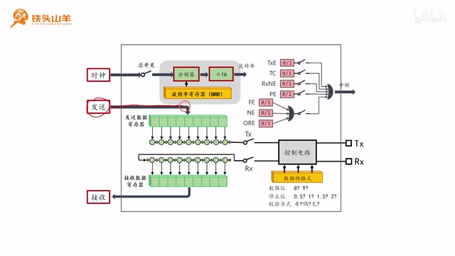
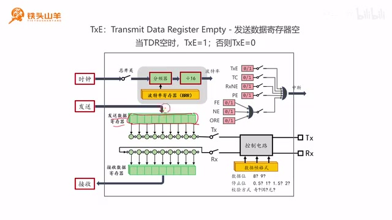
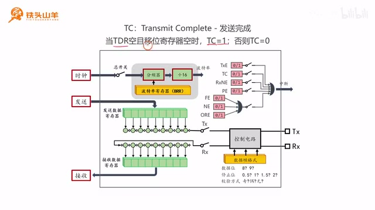
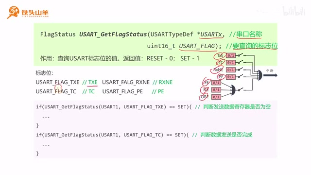
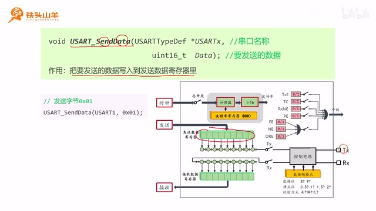
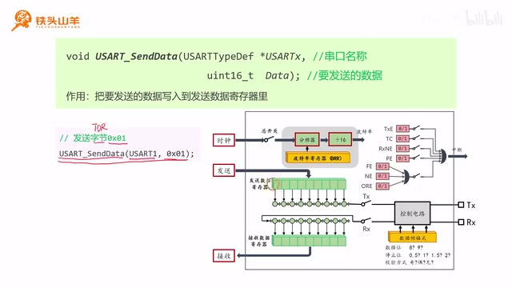
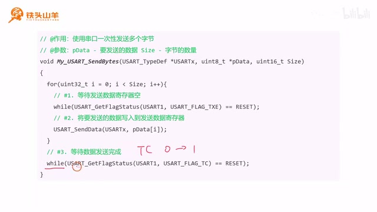
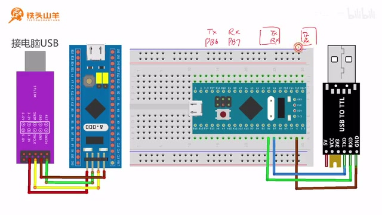
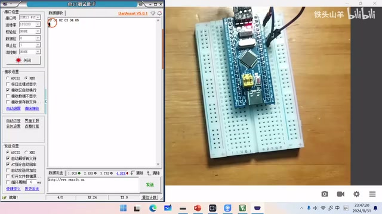

P013 · 3.4 （串口）发送数据¶
各位同学大家好，我是铁头山羊。今天我们学习第三章第四节，一起来了解如何使用串口发送数据。本套视频所需的材料都包含在这个开发套件包里，大家可以扫描屏幕上的二维码，进入淘宝店铺购买。购买套件后，你会获得课程全部课件和源码，还能加入答疑群，直接和我交流。
本期视频分成五个部分：第一，回顾串口发送数据的过程；第二、第三，分别介绍 TXE 标志位和 TC 标志位；第四，介绍三个新的编程接口；第五，编写串口发送数据的代码。
回顾串口发送过程¶
先回顾串口发送数据的过程。之前的视频已经介绍过如何使用串口发送数据。这里是 USART 模块的内部结构框图，最核心的是上面的发送数据寄存器和下面的接收数据寄存器，这两个寄存器各自带有一个移位寄存器。发送时，CPU 先把要发送的数据写入发送数据寄存器，数据随后自动移动到移位寄存器，再由移位寄存器一位一位地发送出去。

串口发送通路：CPU 将数据写入发送数据寄存器，随后进入移位寄存器并逐位发出。 · 原片 01:24
举个实际例子：假设我们要通过串口发送五个字节，分别是字节一、字节二、字节三、字节四和字节五。首先，CPU 把第一个字节写入发送数据寄存器。
USART 模块会自动把第一个字节移动到移位寄存器，再由移位寄存器一位一位地往外发送。在发送字节一的过程中，上面的发送数据寄存器就空出来了，编程人员可以再把第二个数据送入发送数据寄存器。此时字节一继续逐位发送；八个比特位都发出去以后，字节二就会填补移位寄存器的空缺，字节一也就发完了。
接下来字节二重复这个过程，一位一位往外发。此时编程人员发现发送数据寄存器空了，就把第三个字节装进去。字节二继续发送，发完后字节三填补空缺。我们依次执行这个过程，发送字节三、字节四；字节四发完后，字节五进入移位寄存器。最后，字节五的比特位逐个移出。等字节五完全移出移位寄存器，所有数据才算发送完。这时发送数据寄存器和移位寄存器都变成空的。
刚才简单回顾了串口数据发送过程。下面学习两个标志位，先看 TXE。
TXE 标志位¶
框图右上角粉红色的 0 和 1 是 USART 模块内部的一些标志位，例如 TXE、TC、RXNE、PE、FE、NE 和 ORE。这些标志位的值可能是 0 或 1，反映 USART 模块当前的工作状态。查询它们的值，就可以获得和模块工作状态相关的信息。今天学习的 TXE 和 TC 都与数据发送过程有关。
先看 TXE。TXE 是英文 transmit data register empty 的缩写，transmit 是发送，data 是数据，register 是寄存器，empty 是空，连起来就是“发送数据寄存器空”。所以它就是发送数据寄存器空标志位。这里的发送数据寄存器指框图中的这个寄存器。顾名思义，这个标志位用于判断发送数据寄存器里面有没有数据：如果没有数据，寄存器为空，TXE 等于 1；如果里面有数据，寄存器非空，TXE 等于 0。

TXE 标志位在发送数据寄存器为空时为 1，有数据时为 0。 · 原片 05:16
TXE 有什么作用？还是用刚才发送五个字节的例子说明。在发送数据之前，也就是把数据写入发送数据寄存器之前，最好先判断发送数据寄存器是不是空的。如果不判断，新写进去的数据就可能覆盖原来的数据。例如先发字节一，接着就发字节二；此时字节一还在发送，字节二在发送数据寄存器里。
这时两个寄存器都是满的。如果现在还想把第三个字节写进去，第二个字节就会丢失，被第三个字节覆盖。因此，在发送任何一个字节之前，都需要先检查 TXE，确保发送数据寄存器是空的。这是 TXE 最常用的作用。
TC 标志位¶
讲完 TXE，再看第二个标志位 TC。TC 是 transmit complete 的缩写，transmit 是发送，complete 是完成，所以它是发送完成标志位，用来指示 USART 里的数据有没有发送完成。
TC 等于 1 的条件是 TDR 为空，并且移位寄存器也为空。TDR 就是发送数据寄存器。只有这两个寄存器里都没有数据，TC 才等于 1；否则 TC 等于 0。

TC 只有在发送数据寄存器和移位寄存器都为空时才为 1。 · 原片 06:57
为什么要等两个寄存器都空才算发送完成？因为移位寄存器里保存的是正在发送的数据，它正一位一位地往外发送；发送数据寄存器里的数据则是将要发送的数据，也就是下一个要发送的数据。上一个数据完全移出移位寄存器后，下一个数据会补上来。
我们仍用发送五个字节的例子来看：先发送第一个字节，再写入第二个字节；第一个字节发完后，第二个字节填补进来。第二个字节发送过程中，再发第三个字节。
在发送过程中，不管是发送数据寄存器还是移位寄存器，总会有一个里面有值。我们继续重复这个过程，发送第四个，再发送第五个。注意，当第四个数据发送完成后，第五个数据会进来。等第五个数据完全移出移位寄存器，才证明发送完成。此时发送数据寄存器和移位寄存器都是空的，我们就可以判定发送结束了。这就是 TC 为什么要求两个寄存器都空才判定发送结束。
编程接口¶
刚才已经讲完这两个标志位。下面学习三个新的编程接口。
USART_Cmd¶
上期视频少介绍了一个编程接口 USART_Cmd。它的作用是控制 USART 模块的使能和禁止，原理上就是控制 USART 模块的总开关。框图左上角有一个总开关：闭合时 USART 模块被使能，断开时模块被禁止。这个编程接口实际控制的就是这个总开关。
这个接口有两个参数。第一个参数 USARTx 用来填写串口名称；这颗单片机有 USART1、USART2 和 USART3，用哪个串口就填对应的名称。第二个参数 NewState 用来指定使能还是禁止 USART 模块：想使能就填 ENABLE，想禁止就填 DISABLE。
例如，想使能 USART1，代码写 USART_Cmd(USART1, ENABLE);；想禁止 USART1，就写 USART_Cmd(USART1, DISABLE);。上期视频初始化串口时，最后应该闭合总开关，这样串口初始化才算完成。
现在补上这一行代码。我们打开上期视频编写的工程，简单回顾之前写的代码：首先调用 USART_Init 初始化串口，下面这部分是 IO 引脚初始化。这段代码看着有点乱，我们把 IO 引脚初始化放到串口初始化之前，于是从 GPIO_InitTypeDef 变量声明开始，到后面相应的初始化代码，整体剪切并移到串口初始化前面。这样代码看起来规整多了。初始化完 USART 模块后，调用刚才的 USART_Cmd 使能模块，第二个参数填 ENABLE，作用就是闭合总开关。
这里的注释显示不了中文，我教大家怎么设置：点击 Edit 菜单，再点 Configuration，找到第一个选项卡里的 Encoding。现在用的是 ANSI 编码，把它改成 UTF-8，点击确定。这样就可以写中文注释了。
USART_GetFlagStatus¶
下面学习第二个编程接口 USART_GetFlagStatus。Get 是获取，flag 是标志位，status 是状态，合起来就是获取标志位当前状态，也就是查询标志位当前值。
这个接口有两个参数。第一个参数 USARTx 填串口名称，用哪个串口就填哪个，USART1、USART2 或 USART3 都可以。第二个参数 USART_FLAG 用来填写要查询的标志位名称。这里有几个标志位：TXE、TC、RXNE、PE、FE、NE 和 ORE。比如查询 TXE，第二个参数填 USART_FLAG_TXE；

USART_GetFlagStatus 查询 USART 标志位，并通过 RESET 或 SET 返回 0 或 1。 · 原片 13:04
查询 RXNE 就填 USART_FLAG_RXNE；查询 TC 就填 USART_FLAG_TC；查询 PE 就填 USART_FLAG_PE。其余标志位的填写方式相同。
这个接口还有一个返回值，类型是 FlagStatus。如果返回 RESET，表示标志位当前值是 0；如果返回 SET，表示当前值是 1。通过判断返回值，就能知道当前标志位到底是 0 还是 1。
看代码怎么用。比如要判断发送数据寄存器是否为空，就查询 TXE。只有 TXE 等于 1，才说明发送数据寄存器为空。因此调用 USART_GetFlagStatus 查询 TXE；当返回值是 SET 时，就表示 TXE 等于 1。
我们用 if 判断这个返回值。同样，下一步还要判断数据发送是否完成。怎么知道发送是否完成？查询 TC。只有 TC 等于 1，才代表数据发送完成，所以用这个接口查询 TC；当返回值等于 SET 时，就表示发送完成。
USART_SendData¶
最后学习第三个编程接口 USART_SendData。Send 是发送，data 是数据，从名字可以看出，这个接口用于发送数据。实际上，它是把要发送的数据写入发送数据寄存器。

USART_SendData 将指定数据写入发送数据寄存器。 · 原片 15:00
写进去之后，USART 模块会自动帮我们把数据发送出去。
这个接口也有两个参数。第一个参数 USARTx 填串口名称。第二个参数 Data 填要发送的数据，也就是要放进这个数据帧的数据。使用串口时一般以字节为单位发送，但要注意 Data 的类型是无符号 16 位整型，占两个字节。为什么要用无符号 16 位整型？要回顾串口数据帧格式：数据帧由起始位、8 到 9 个数据位以及停止位组成。当使用 9 位数据位并且没有校验位时，一次发送 9 个比特，比一个字节多 1 个比特。如果 Data 是无符号 8 位整型，刚好只有一个字节，就无法发送 9 位数据。因此这里使用无符号 16 位整型。
举个简单例子：假设要向发送数据寄存器，也就是 TDR，写入一个字节 0x01。调用这个接口，第一个参数填串口名称 USART1，第二个参数填要发送的数据 0x01。调用后，0x01 就写入发送数据寄存器，也就是七个 0 加一个 1。

调用 USART_SendData(USART1, 0x01) 后，0x01 写入发送数据寄存器。 · 原片 16:44
到这里，所有编程接口都介绍完了，下一步用它们组合出串口发送数据的代码。
编写多字节发送函数¶
先把本节要写的代码整体摆出来，后面再一步一步分析为什么这样写。我们的目的是自己编写一个函数，让串口一次性发送多个字节。函数取名为 My_USART_SendBytes：My 前缀表示这是我自己写的代码，用来和标准库代码区分、防止重名，没有其他特殊意义；USART 表示串口，Send 是发送，Bytes 是字节，末尾的 s 表示一次发送多个字节。
这个函数有三个参数。第一个参数是 USART_TypeDef 指针类型的变量 USARTx，用来填写串口名称，也就是指定用哪个串口发送这些字节。第二个参数 pData 是无符号 8 位整型指针，可以把它理解成一个数组；我们通过这个数组把要发送的字节传入函数。第三个参数 Size 是无符号 16 位整型，用来填写要发送的字节数量，也就是前面的数组包含多少个要发送的字节。
现在回到编程位置，把函数声明写在 main 方法前面。函数没有返回值，名字叫 My_USART_SendBytes，表示一次性发送多个字节。第一个参数是 USART_TypeDef *USARTx，用于填写要使用的串口名称；第二个参数是无符号 8 位整型指针，数组名叫 pData，用于传入要发送的数据；第三个参数是无符号 16 位整型变量 Size，用于指定一次发送多少个字节。这样函数声明就写完了。
下面看函数内部如何实现。因为要一次性发送多个字节，所以使用一个 for 循环，循环 Size 次，也就是发送多少个字节就循环多少次。每循环一次，就发送一个数据。函数的实现一般写在 main 方法后面。我们把刚才的声明复制过来，写上两个花括号作为函数体。注意文件末尾至少留一个空行。
再写刚才的 for 循环。这里回顾数据发送过程：把数据写入发送数据寄存器之前，必须先检查寄存器是否为空。如果里面当前有数据，又写入新数据，旧数据就会丢失。正确步骤分两步：先查询 TXE 标志位，再把数据写入发送数据寄存器。
函数的实现一般写在 main 方法后面。我们翻到 main 方法后面，把刚才的函数声明粘贴过来，再写两个花括号作为函数体。注意文件末尾至少要留一个空行。现在写刚才的 for 循环。循环总共执行 Size 次，Size 就是要发送的数据个数：要发多少个字节，循环就执行多少次。
这里再回顾数据发送过程。把数据写入发送数据寄存器之前，必须先检查这个寄存器是否为空。如果寄存器当前有数据，又写进去一个新数据，旧数据就会丢失。所以正确的操作顺序是先查询 TXE 标志位，再把数据写入发送数据寄存器，总共分两步。观察 for 循环内部的代码，也正是这两步：第一步等待发送数据寄存器变空；只有它变空，才把数据写进寄存器。先看它是怎么等待寄存器变空的：这里使用一个 while 循环。
这个循环会一直运行，直到查询到 TXE 变成 SET 才退出，继续执行下面的代码。查询结果变成 SET 意味着 TXE 等于 1；SET 代表 1，RESET 代表 0。TXE 等于 1 就表示发送数据寄存器变空了，所以 while 循环可以用来等待寄存器变空。退出后调用编程接口，把数据写入发送数据寄存器。
写入的是数组的第 i 个元素。我们在 for 循环里，所以 i 表示当前循环次数，也就是当前要发送的第 i 个数据。现在写代码：第一步等待发送数据寄存器为空，使用 while 循环。在循环里调用 USART_GetFlagStatus，不断查询 USART1 的 TXE 标志位，也就是 USART_FLAG_TXE。如果它等于 RESET，说明值是 0，循环条件就一直成立，直到发送数据寄存器为空。第二步把数据写入发送数据寄存器，调用 USART_SendData；第一个参数填串口名称，第二个参数填要发送的数据，也就是数组里的第 i 个元素。
这样数据就会一个一个地被发送出去。通过刚才的代码，我们已经把全部这些数据都写入到发送数据寄存器里面了。此时，发送数据寄存器里存着要发送的最后一个字节，移位寄存器里存着倒数第二个字节。不过还没完，我们还需要等待数据发送完成：等倒数第二个字节移出移位寄存器，再让最后一个字节进入并慢慢移出。到这时，整个发送才完成。
怎么判断发送有没有完成？查询 TC。只有 TC 等于 1，才表明这两个寄存器都是空的。因此最后一步要等待 TC 从 0 变成 1。还是使用 while 循环，不断查询 TC 的值。如果 TC 等于 0，条件成立，循环一直执行；直到查询到 TC 为 SET，也就是 1，循环退出，说明发送结束。

多字节发送函数在每次写入前等待 TXE，循环结束后再等待 TC。 · 原片 25:22
下面编写代码。注意，等待 TC 的代码一定要写在 for 循环外面，因为我们最后才查询 TC。不要把它写到 for 循环里面。使用 while 循环调用 USART_GetFlagStatus 查询 TC；当它等于 RESET 时就一直循环，直到变成 SET。
直到 TC 变成 SET、变成 1，数据发送就结束了。这就是整个函数的编写方式。
连接电路并验证发送¶
待会儿做实验测试刚才的编程接口好不好用，并把数据发送到电脑。
要向电脑发送数据，需要准备一个 USB 转 TTL 模块。它能把单片机的串口转换成 USB 接口，这样单片机和电脑就可以通信。先连接电路。上期视频初始化了串口 IO 引脚；如果不重映射，串口 TX 和 RX 分别在 PA9 和 PA10；进行了重映射后，两个引脚变到 PB6 和 PB7。两个串口设备连接时，TX 和 RX 引脚要交叉连接：单片机 PB6 是 TX 引脚，应接 USB 转 TTL 模块的 RX 引脚，图中用绿线连接；单片机 PB7 是 RX 引脚，应接模块的 TX 引脚。最后用棕色线把两个模块的 GND 连接在一起。

USB 转 TTL 与单片机串口交叉连接 TX/RX，并共地。 · 原片 27:22
接好这部分电路后，还要用杜邦线把 ST-Link 调试器和单片机连接起来，这样电路就连接完成了。请从开发套件包里拿出最小系统板、面包板、USB 转 TTL 模块和 ST-Link 调试器，注意看清 USB 转 TTL 模块的样子，不要拿错。
把线接好后效果如图，大家可以对照检查有没有接对。接完线，把 ST-Link 调试器和 USB 转 TTL 模块都插到电脑上。本次实验还要用一个叫“串口调试助手”的软件，类似的软件很多，我选择了一个最简单的。软件下载包放在课程资料的百度网盘里，打开课程资料，找到第三章第四节，里面有 UARTAssist.exe，下载下来即可。这个软件免安装，下载后双击打开。
先配置参数。左边先设置串口号。我这台电脑有两个串口，怎么判断哪个是 USB 转 TTL 模块的串口？先把模块拔下来，可以看到只剩串口一；再插回去，会多出一个串口 13。串口 13 就是这个模块对应的串口号。
然后设置数据帧格式，应当和单片机的格式保持一致。初始化时单片机设置的波特率是 115200，数据位 8 位，停止位 1 位，没有校验位。串口调试助手也要设置相同参数，因为双方通信时规则要保持一致，否则就没办法交流。这里把波特率设为 115200，不使用校验位，数据位选择 8 位。
停止位选择 1 位，然后打开串口，点击这个按钮即可。指示灯变红，说明串口打开成功。
回到代码。刚才已经编写好函数，现在测试它是否好用。在 main 方法的 while 循环之前，也就是串口初始化完成后，调用 My_USART_SendBytes。先声明一个数组，名字随便起，叫 bytesToSend，里面放要发送的数据，例如 1、2、3、4、5。通过串口一发送，把 USART1 和数组名传进去，数据个数填 5。这样函数就调用完了。
现在点击左上角第二个按钮编译代码，没有错误，也没有警告。然后把代码下载到单片机，点击 Download 按钮即可，下载完成后回到串口调试助手。接收设置选择 Hex，也就是点一下这里的圆点。设置好后按一下单片机复位按钮，可以看到串口调试助手收到了六个数据。前面的 FF 不是我们想要的，后面的 01 02 03 04 05 就是刚才发送的数据。

串口调试助手收到的 01 02 03 04 05 与示例数组相符，前面的 FF 被讲解者指出并非目标数据。 · 原片 31:51
至于为什么出现 FF，这里大家不用管；如果真的想了解，可以到答疑群问我。
到这里实验完成。本期视频的内容就是这些，感谢大家收看，我是铁头山羊，我们下期视频再见。